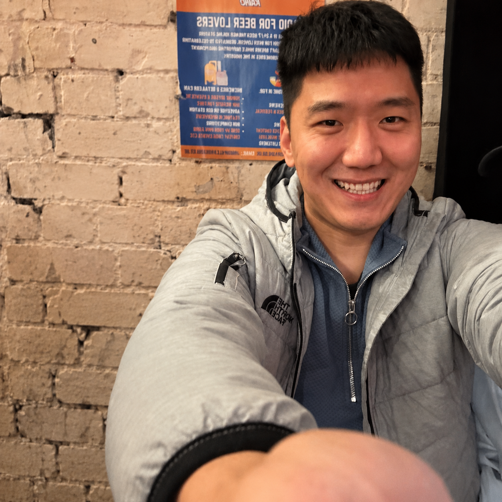

2026
STEP-LLM: Scaling Causal Profiling of Super-Token Encoding and Cross-Lingual Fixedness in Frontier LLMs
AIRR Gateway Compute Award, Isambard-AI AIRR Service, UKRI/DSIT. Project Lead; 10,000 GPU-hours awarded.
Postdoctoral Research Associate, University of Exeter
I am an NLP researcher studying how language models represent lexical fixedness, integrate long-context evidence, and ground multiword expression meaning across language and vision.

Research
My research examines the mechanisms behind idiomatic and lexicalized meaning in language models, especially where tokenization, retrieval, context length, and visual grounding shape model behavior. Current manuscripts investigate super-token encoding as a signature of lexical fixedness, the gap between retrieval and integration in long-context language models, and how multiword expression meaning is grounded across modalities.
Selected Publications
Projects
AIRR Gateway Compute Award, Isambard-AI AIRR Service, UKRI/DSIT. Project Lead; 10,000 GPU-hours awarded.
AIRR Gateway Compute Award, Isambard-AI AIRR Service, UKRI/DSIT. Project Lead; 10,000 GPU-hours awarded.
European COST Grant CA21167. Project Lead; completed short research project on image generation guidance and multimodal idiomaticity resources.
Experience
NLP research on lexical fixedness, multiword expressions, long-context language models, multimodal grounding, and LLM/VLM evaluation.
Research on idiomaticity, multiword expressions, multilingual NLP, representation learning, and semantic evaluation.
NLP algorithm development and data-driven language processing applications.
Data mining and machine learning applications.
Education
Thesis: Text Simplification with Deep Neural Networks Using Knowledge Transfer.
Graduate study in machine learning, feature selection, and data mining.
Service
Reviewer for ACL 2026 and NeurIPS 2026. Program committee and reviewer for NeurIPS, ACL, EMNLP, AAAI, and IJCAI. Journal reviewer for ACM Computing Surveys, IEEE TKDE, Knowledge-Based Systems, Pattern Recognition, IEEE Transactions on Artificial Intelligence, and Neurocomputing.